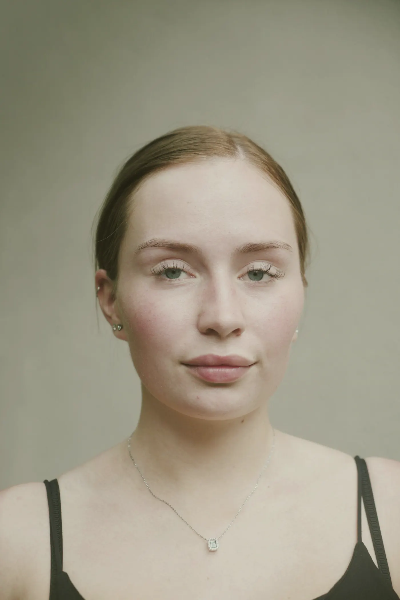
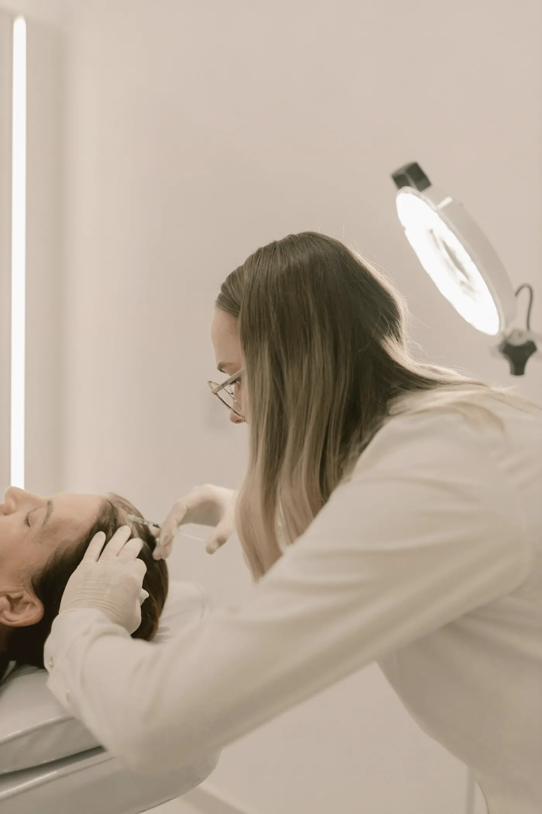
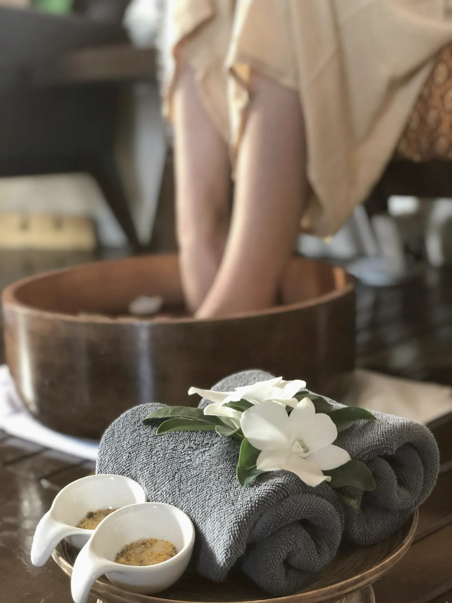

Imersão + mentoria · out/2026
Full Face com Preenchedor
Planejamento do rosto inteiro e técnica de preenchimento, em parceria com o IBAP.
Dr. Glautium Gabriel
Quero a próxima turma
Além de cuidar de pacientes, o IHFC é lugar de ensino. Turmas pequenas, teoria e prática no mesmo lugar e professores que vivem a rotina da clínica.
Cursos, imersões e mentorias do IHFC Cursos, vários em parceria com o IBAP. Clique no curso que te interessa e entre na lista da próxima turma.

Planejamento do rosto inteiro e técnica de preenchimento, em parceria com o IBAP.
Dr. Glautium Gabriel
Quero a próxima turmaAvaliação do contorno, indicação e técnica para o tratamento da papada.
IHFC Cursos
Quero a próxima turmaMentoria realizada no IHFC, da avaliação da expressão à aplicação.
Dr. Glautium Gabriel
Quero a próxima turmaFormação sobre fios de sustentação e estímulo: indicação, técnica e acompanhamento.
IHFC Cursos
Quero a próxima turma
Tipos de peeling, indicação para cada pele e cuidados antes e depois.
Dr. Glautium Gabriel
Quero a próxima turma
Protocolos de limpeza de pele com técnica profissional.
Dr. Gabriel Rocha
Quero a próxima turma
Técnicas manuais e liberação miofascial, em parceria com o IBAP.
Sávio Luiz e Adlan Miranda
Quero a próxima turma


Especialista em Harmonização Orofacial e em Cirurgia e Traumatologia Bucomaxilofacial, diretor do IHFC. Ensina o que aplica na rotina da clínica: avaliação cuidadosa, planejamento por escrito e acompanhamento do paciente no pós.
CRO-BA 16384 · @dr.glautiumgabriel
Sala teórica e sala prática prontas para turmas de até 10 alunos, com contratação por turno ou diária. Valores sob consulta.
Mande uma mensagem e entre na lista. Quando abrirem as vagas, você recebe as datas antes de todo mundo.
Entrar na lista pelo WhatsApp